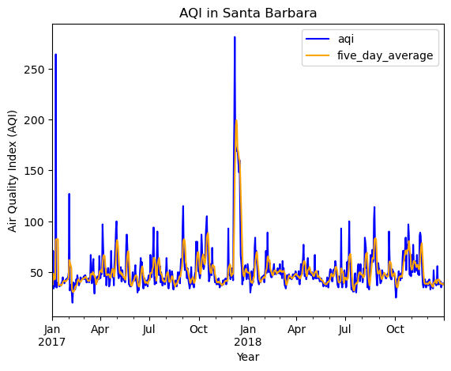
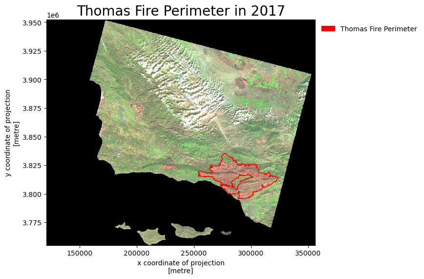

import os
import numpy as np
import pandas as pd
import geopandas as gpd
import xarray as xr
import rioxarray as rioxr
import matplotlib.patches as mpatches
from matplotlib.markers import MarkerStyle
from shapely import Point
from shapely import Polygon
from shapely import box
import matplotlib.pyplot as plt
import matplotlib.lines as mlinesLink to associated github is here. More information such as analysis and notebook can be found here.


Overview
In the latter half of 2017, multiple fires broke out in the state of California. This included the Thomas fire, a devastating fire that burned a total of 281,893 acres including hundreds of buildings as well as taking the lives of 2 people. [https://vcfd.org/news/vcfd-determines-cause-of-the-thomas-fire/] This fire also disrupted everyday life for Santa Barbara county residence. Schools were cancelled, and almost all shops were closed in Santa Barbara.
This story hits close to home as my family was one of those that was impacted by the fires. My family runs a business on State Street, and with that being our main source of income, we had to stay open for the few people that would come visit downtown. Additionally after the fires, heavy rain came in the area and flooded the 101 freeway, connecting Ventura and Los Angeles county from the Santa Barbara county.
With wanting to understand the impacts of air quality caused by the Thomas fires as well as my personal connection to the event, I’ll be doing a deep dive into how the Thomas fire impacted the air quality in Santa Barbara County, as well as create a visual map of the area burned by the fire.
Datasets used in this analysis:
- Air quality data
- Air Quality Data for 2017
- Air Quality Data for 2018
- Information on AQI here
- [Landsat Collection 2 Surface](Reflectance(https://www.usgs.gov/landsat-missions/landsat-collection-2-surface-reflectance)
- Additional information: -Landsat Satellite homepage
AQI Analysis
Load Necessary Packages
Import AQI Data
AQI data was downloaded from the EPA website. Both 2017 and 2018 were download to see the air quality for both years. I’ll first go ahead and read in the data and see what the two datasets look like.
# read in daily AQI 2017 zip file from url
aqi_17 = pd.read_csv("https://aqs.epa.gov/aqsweb/airdata/daily_aqi_by_county_2017.zip")
# read in daily AQI 2018 zip file from url
aqi_18 = pd.read_csv("https://aqs.epa.gov/aqsweb/airdata/daily_aqi_by_county_2018.zip")
print(aqi_17.head())
print(aqi_18.head())AQI Data Wrangling
Now that I have a sense of what is contained in these datasets, I want to simplify them into one dataset. However, the data provided gives us information for the whole country. Since we are focusing on Santa Barbara County AQI, I’ll go ahead and join them into one dataset using the concat function as well as subset for Santa Barbara county. Then I’ll go ahead and filter for columns that only include the information I am interested in. I’ll also go ahead and make sure that the date column is in datetime to make working with dates easier.
#join the two datasets together
aqi = pd.concat([aqi_17, aqi_18])
# change column names to lowercase and replace spaces with '_'
aqi.columns = aqi.columns.str.lower().str.replace(' ','_')
#filter for observations that are in Santa Barbara County
aqi_sb = aqi[aqi['county_name'] == 'Santa Barbara']
#remove not needed columns from the data frame
aqi_sb = aqi_sb.drop(columns=['state_name','county_name','state_code','county_code'])
# change date type to be in datetime object (can be ran only one time)
aqi_sb.date = pd.to_datetime(aqi_sb.date)
#change index to be set to date
aqi_sb = aqi_sb.set_index('date')AQI data visualization
Now we have a filtered dataset, I’ll go ahead and use that to make a graph, visualizing the air quality over the two years. I’ll also go ahead and calculate a 5 day rolling average to see if the air quality during that time was significant or not.
#create a new column that is the 5 day rolling average mean
aqi_sb['five_day_average'] = aqi_sb.aqi.rolling('5D').mean()
#Plot data
aqi_sb.plot(y = ['aqi', 'five_day_average'], #plot both aqi and five_day_average column
title = 'AQI in Santa Barbara', #add title to graph
xlabel = 'Year', #add x label to graph
ylabel = 'Air Quality Index (AQI)', #add y label to graph
color = {'aqi': 'blue', #add blue to aqi line
'five_day_average': 'orange' #add orange to five_day_average line
},
)Takeaways: At around December 2017, There is a large spike in the AQI with both the daily and 5 day average. Surprisingly, there in an increase in AQI at January 2017. I assume there was a fire at the beginning of that year. However, looking at the 5 day rolling average, it seemed that the fire in 2018 (Thomas Fire) has a significant impact towards the AQI compared to last year’s 5 day rolling average.
Thomas Fire area burn Analysis
Same as before, let’s go ahead and load in our data needed for this analysis. For this step, I’ll also go ahead and do everything in one code chuck as it follows a similar pattern as seen above. You’ll see that I did a step pertaining to squeezing and dropping a band. That is because this is a raster dataset. If the band is not dropped, you will not be able to map it.
# Read in bands dataset
#create pathway
ca_bands_fp = os.path.join(os.getcwd(),'data','landsat8-2018-01-26-sb-simplified.nc')
#read data using pathway
ca_fires_bands_2017 = rioxr.open_rasterio(ca_bands_fp)
#get rid of band in ca_fires_band_2017
# original dimensions and coordinates
print('original dimensions: ', ca_fires_bands_2017.dims,'\n')
# remove length 1 dimension (band)
ca_fires_bands_2017 = ca_fires_bands_2017.squeeze()
print('removed band from dimensions: ', ca_fires_bands_2017.dims,'\n')
# remove coordinates associated to band
ca_fires_bands_2017 = ca_fires_bands_2017.drop('band')
print('new dimensions: ', ca_fires_bands_2017.dims)
#change column names:
#make columns lower case
ca_fires_perimeter_2017.columns = ca_fires_perimeter_2017.columns.str.lower()
#change crs to the bands raster data
ca_fires_perimeter_2017 = ca_fires_perimeter_2017.to_crs(ca_fires_bands_2017.rio.crs)
#create thomas fire perimeter
thomas_perimeter = ca_fires_perimeter_2017[ca_fires_perimeter_2017['fire_name']=='THOMAS']
#create map
#plot an empty plot
fig, ax = plt.subplots(figsize = (8,6))
#plot CA fire bands map as the base
ca_fires_bands_2017[['swir22', #subset for the three wanted bands
'nir08',
'red']].to_array().plot.imshow(ax = ax,
robust = True)
#plot thomas fire perimeter over base map
thomas_perimeter.plot(ax = ax, edgecolor = "red", color = 'none') #plot thomas_perimeter
thomas_perimeter_patches = mpatches.Patch( color = "red", #create label for legend and change color
label = "Thomas Fire Perimeter") #set label
#set title for map
ax.set_title('Thomas Fire Perimeter in 2017',
fontsize=20) #change font size
#add legend onto map
ax.legend(handles = [thomas_perimeter_patches], frameon=False, loc='upper left', bbox_to_anchor = (1, 1))Takeaways: Here we can see the amount of area that was burned by the Thomas fire. We can notice that there were some burnt area on the left, but none nearly as big as the Thomas Fire burn. This large area of burn would almost make sense why a mudslide followed in its tracks. The open space caused by the fire made it more possible for the surface soil to be washed away as there were no plants to keep the soil intacted.
Citation
BibTeX citation:
@online{park2023,
author = {Park, Patty},
title = {Analysis of the {Air} {Quality} Caused by the {Thomas}
{Fire}},
date = {2023-12-13},
url = {https://p-park6.github.io/blog/2023-12-22-aqi-thomas-fire/},
langid = {en}
}
For attribution, please cite this work as:
Park, Patty. 2023. “Analysis of the Air Quality Caused by the
Thomas Fire.” December 13, 2023. https://p-park6.github.io/blog/2023-12-22-aqi-thomas-fire/.